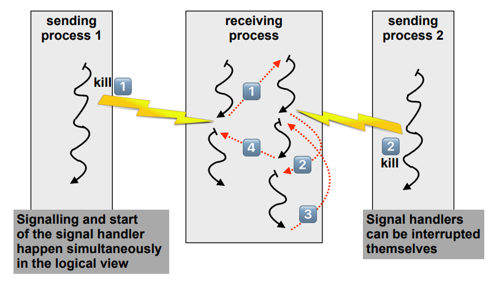
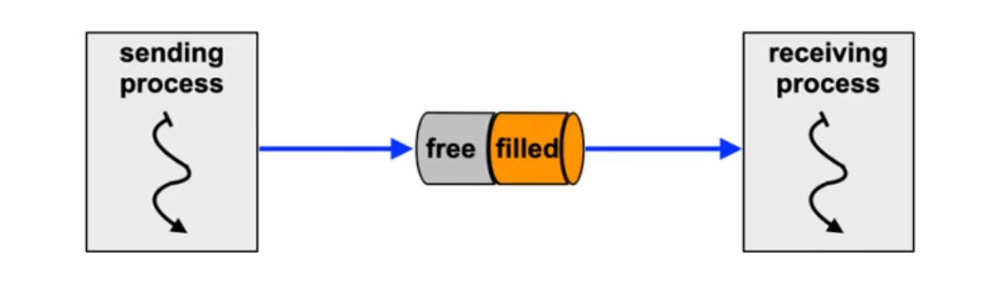
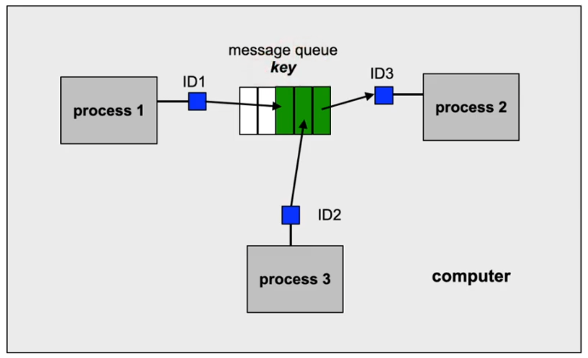
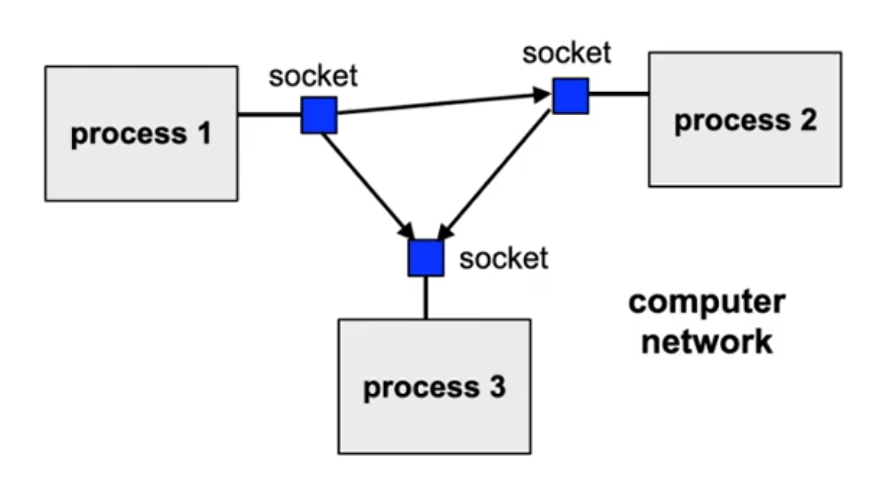
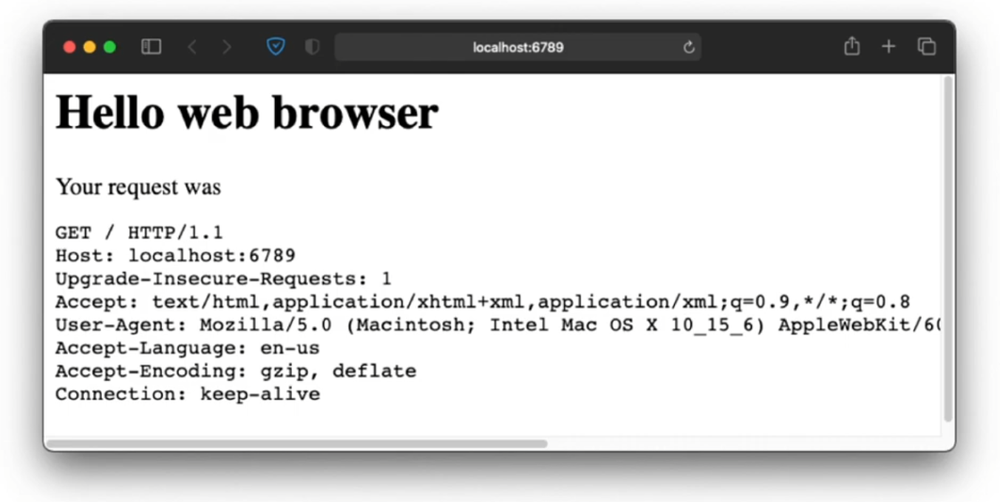
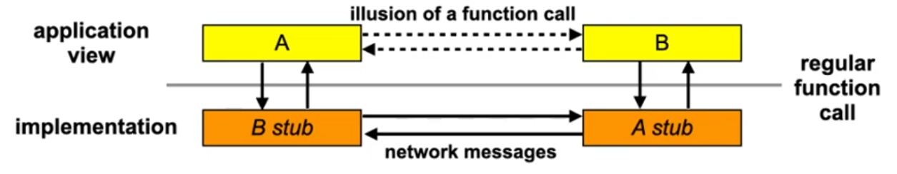

lecture.11
Lecture 11, part 1: Inter-process communication (IPC)
Exam
Communication between processes
Important questions:
- Which approaches to inter-process communication exist?
- Can you give their pros/cons?
- What are the primitives for message-based communication?
- Which synchronization methods exist here?
- How can processes be addressed?
- Which message formats exist?
- Which IPC methods exist in Unix?
- Can you describe the concepts and use (programming) of…
- Signals, unnamed pipes, named pipes, Unix message queues, sockets
- What is RPC and what is the fundamental difference to IPC?
Processes revisited
- Processes can interact with each other
- …wait for another (synchronization)
- …exchange data (communication)
- Waiting mechanisms...
- are required for controlled communication
- can lead to deadlocks
- We did not take a close look at data exchange so far
- light- and featherweight processes in the same address space
Inter-process communication
- Inter-Process Communication (IPC)
- multiple processes cooperate on a task
- simultaneous use of information by multiple processes
- reduction of processing time due to parallelization
- hiding of processing times due to "background execution"
- Communication using messages
- messages are exchanged between processes
- no shared memory necessary
- Communication using shared memory
- exchange of data by concurrent writes into and reads out of a common memory area
- synchronisation is important here!
Message-based communication
Based on two primitives:
send (destination, message)
receive (source, message)
- Implementations differ in
- synchronization
- addressing
- and possibly other properties
Synchronization
... for message oriented communication
- Synchronization when sending / receiving
- Synchronous message passing (also called "rendezvous")
- Receiver blocks until the message has arrived
- Sender blocks until the reception of the message is confirmed
- Asynchronous message passing
- Sender hands the message to the OS and continues running
- Blocking is optional on both sides
- Always requires buffering
- Synchronous message passing (also called "rendezvous")
- Often implemented:
- Asynchronous message passing with potentially blocking send and receive operations
Addressing
... for message oriented communication
- Direct addressing
- process ID (signals)
- communication end point of a process (port, socket)
- Indirect addressing
- channels (pipes)
- mailboxes, message queues
- Additional dimension: group addressing
- unicast – send to exactly one recipient
- multicast – send to a selection of possible recipients
- broadcast – send to all
Additional properties
... for message oriented communication
- Message format
- stream oriented / message oriented
- fixed length / variable length
- typed / untyped
- Transmission
- unidirectional / bidirectional (half duplex, full duplex)
- reliable / unreliable
- order is preserved / not preserved
Local IPC: Unix signals
- Signals are interrupts implemented in software
- similar to hardware I/O interrupts from devices
- minimal form of inter process communication (only the signal number is transmitted)
- Sender:
- Processes: use the system call kill(2)
- Operating system: when certain events occur
- The receiving process handles signals in one of these ways:
- ignore,
- terminate the process or
- execution of a signal handler function
- after handling the signal, the process can continue at the location where it was interrupted
Signals
- Using signals, processes can be informed about exceptional situations
- similar to hardware interrupts
- Examples:
SIGINTTerminate the process (ctrl-C)SIGSTOPSuspend process (Ctrl-Z)SIGWINCHWindow size has changesSIGCHLDChild process terminatedSIGSEGVMemory protection violationSIGKILLProcess is killed- ...
- Most signal have a default handler, e.g. termination or suspension
- this can be redefined for most signals
- see the signal(2) man page
Unix signals: logical view
- Hollywood principle: "don't call us, we'll call you."

Unix signals: implementation view
- Signal handling always takes place when the execution returns from kernel to user mode (e.g. when a process returns from a system call)
- What happens, when a receiving process…
- is running (state RUNNING)?
- signals occur due to e.g. segmentation faults or bus error
- immediate start of the signal handler
- is currently not running, but READY (e.g. kill syscall sent by other process)?
- the signal is recorded in the receiver’s process control block
- when the process is allocated the CPU, the signal is handled
- is waiting for I/O (state BLOCKED)?
- the I/O syscall (e.g. read) is interrupted and eventually return with EINTR
- the process state is set to READY
- then continue as with READY above
- If required, the interrupted system call is executed again (SA_RESTART)
- is running (state RUNNING)?
Unix signals: example
- Which actions can be taken as a response to a signal?
- Excerpt from the Apache HTTP server manual
Stopping and Restarting Apache
To send a signal to the parent you should issue a command such as: kill -TERM cat /usr/local/apache/logs/httpd.pid``
TERM Signal: stop now
Sending the TERM signal to the parent causes it to immediately attempt to kill off all of its children. It may take it several seconds to complete killing off its children. Then the parent itself exits. Any requests in progress are terminated, and no further requests are served.
HUP Signal: restart now
Sending the HUP signal to the parent causes it to kill off its children like in TERM but the parent doesn't exit. It re-reads its configuration files, and re-opens any log files. Then it spawns a new set of children and continues serving hits.
USR1 Signal: graceful restart
The USR1 signal causes the parent process to advise the children to exit after their current request (or to exit immediately if they're not serving anything). The parent rereads its configuration files and re-opens its log files. As each child dies off the parent replaces it with a child from the new generation of the configuration, which begins serving new requests immediately.
Unix pipes
- Channel between to communicating processes
- unidirectional
- buffers (fixed buffer size)
- reliable transport
- stream oriented
- Operations: read and write
- order of sent characters is maintained (character stream)
- blocks when pipe is full (write) and empty (read)

Programming Unix pipes
- Unnamed pipes
- creation using int pipe (int fdes[2])
- after successful invocation (return value == 0) you can...
- read from the pipe using fdes[0] (system call read)
- write to the pipe using fdes[1] (system call write)
- then you have to pass the one "end" of the pipe to another process
- shown on the next slide
- Named pipes
- pipes can also be created as a special file (file name passed in "path" parameter") in the file system: int mkfifo (const char *path, mode_t mode)
- after calling mkfifo, you can use standard functions to open, read, write and close that pipe
- the usual file access permissions control which processes are allowed to use the named pipe
enum { READ=0, WRITE=1 }; /* indexes in fd array */
int main (int argc, char *argv[]) {
int res, fd[2];
if (pipe (fd) == 0) { /* create the pipe */
res = fork ();
if (res > 0) { /* parent process */
close (fd[READ]); /* close reading side */
dup2 (fd[WRITE], 1); /* redirect stdout to pipe */
close (fd[WRITE]); /* release the descriptor */
execlp (argv[1], argv[1], NULL); /* execute writer process */
}
else if (res == 0) { /* child process */
close (fd[WRITE]); /* close writing side */
dup2 (fd[READ], 0); /* redirect stdin from pipe */
close (fd[READ]); /* release the descriptor */
execlp (argv[2], argv[2], NULL); /* execute reader process */
}
}
/* …handle errors here… */
}
Unix message queues
- A "key" (unique address, per computer) is used for identification
- access permissions are the same as for files
- a process local number (msqID – message queue ID) is required for all operations
- Undirected M:N communication
- Buffered
- buffer size configurable per queue
- Messages have a type (long value)
- Operations to send and receive messages
- blocking vs. non blocking (but not asynchronous)
- receive all messages vs. receive only one specified type

Programming Unix message queues
-
Create a message queue and return a msqID int msgget (key_t key, int msgflg);
- all communicating processes need to know the key
- keys are unique in one (operating) system (instance)
- when a key has already been assigned, no message queue with the same key can be created
-
It is possible to create keyless message queues (private queues, key = IPC_PRIVATE)
- non private message queues are persistent
- they have to be deleted explicitly (cmd = IPC_RMID) using: int msgctl (int msqid, int cmd, struct msqid_ds *buf);
-
Send a message:
int msgsnd (int msqid, const void *msgp, size_t msgsz, int msgflg); -
Receive a message:
int msgrcv (int msqid, void *msgp, size_t msgsz, long msgtype, int msgflg);- msgtype = 0: first message
- msgtype > 0: first message with the given type
- msgtype < 0: message with the smallest type <= |msgtype|
Unix message queue commands
- Display all message queues:
ipcs -q - Manually delete message queues:
ipcrm -Q <key>
Today, Unix message queues are rarely used, since – different to sockets (see the next section) – they are constrained to local communication. In addition, the related application code is less portable to other systems.
Lecture 11, part 2: IPC: Sockets and RPC
Sockets
- General communication endpoints in a computer network
- bidirectional
- buffered
- Abstract from details of the communication system
- described by a domain (protocol family), a type and a protocol

Sockets: domains
-
Unix domain
- Unix domain sockets work like bidirectional pipes
- can be created as special file in the file system
-
Internet domain
- used for inter-computer communication using Internet protocols
-
Appletalk domain, DECnet domain, …
- many alternative domains for (now) obsolete network protocols
-
Domains determine the protocols that can be used
- e.g. internet domain: TCP/IP or UDP/IP
-
Domains determine the address family
- e.g. internet domain: IP address and port number
Sockets: type and protocol
- The most important socket types:
- stream oriented, connection oriented and reliable
- message oriented and unreliable
- message oriented and reliable
- Protocols of the Internet domain:
- TCP/IP protocol
- stream- and connection oriented, reliable
- UDP/IP protocol
- message oriented, connectionless, unreliable
- messages can get lost or get duplicated (repeated)
- order can be garbled
- packet limits are maintained (datagram protocol)
- TCP/IP protocol
- Specification of a protocol ist often redundant
Socket programming
- Creating a socket
- generate a socket using
int socket (int domain, int type, int proto);(return value is a file descriptor)
- generate a socket using
- Address assignment
- sockets are generated without assigning an address
- addresses are assigned using:
int bind (int socket,
const struct sockaddr *address,
socklen_t address_len);
- struct sockaddr_in (for the Internet protocol family) contains:
- sin_family: AF_INET
- sin_port: 16 bit port number
- sin_addr: structure with the IP address, e.g. 192.168.2.1
Datagram sockets
- no connection setup required
- send a datagram using
ssize_t sendto (int socket, const void *message,
size_t length, int flags,
const struct sockaddr *dest_addr,
socklen_t dest_len);
- receive a datagram using
ssize_t recvfrom (int socket, void *buffer,
size_t length, int flags,
struct sockaddr *address,
socklen_t *address_len);
Stream sockets
- connection setup required
- clients (user processes) want to create a communication connection to a server (server process)
Client
- connection setup for stream-oriented sockets
- connect the socket using
int connect (int socket,
const struct sockaddr *address,
socklen_t address_len);
- send and receive using write and read (or send and recv)
- connection termination using close (closes the socket)
Server
- accepts requests
- binds a socket to an address (server not reachable otherwise)
- prepared the socket for connection requests using
int listen (int s, int queuelen); - accepts a connection request using
int accept (int s, struct sockaddr *addr, socklen_t *addrlen);- returns a new socket which is connected to the client
- blocks if no current connection request
- reads data using read and executes the respective service (e.g. web server)
- returns the result back to the sender (e.g. contents of a web page) of the request using write
- closes the new socket using close
Socket programming (2)
#define PORT 6789
#define MAXREQ (4096*1024)
char buffer[MAXREQ], body[MAXREQ], msg[MAXREQ];
void error(const char *msg) { perror(msg); exit(1); }
int main() {
int sockfd, newsockfd;
socklen_t clilen;
struct sockaddr_in serv_addr, cli_addr;
int n;
sockfd = socket(PF_INET, SOCK_STREAM, 0); // Creates the socket
if (sockfd < 0) error("ERROR opening socket");
bzero((char *) &serv_addr, sizeof(serv_addr));
serv_addr.sin_family = AF_INET;
serv_addr.sin_addr.s_addr = INADDR_ANY;
serv_addr.sin_port = htons(PORT);
if (bind(sockfd, (struct sockaddr *) &serv_addr,
sizeof(serv_addr)) < 0) { // Binds the socket to an address
error("ERROR on binding");
}
listen(sockfd, 5);
while (1) {
clilen = sizeof(cli_addr);
newsockfd = accept (sockfd, (struct sockaddr *) &cli_addr,
&clilen); // Accepts a new connection
if (newsockfd < 0) error("ERROR on accept");
bzero(buffer,sizeof(buffer));
n = read (newsockfd,buffer,sizeof(buffer)-1); // Reads the HTTP request
if (n < 0) error("ERROR reading from socket");
snprintf (body, sizeof (body),
"<html>\n<body>\n"
"<h1>Hello web browser</h1>\nYour request was\n"
"
"</body>\n</html>\n", buffer);
snprintf (msg, sizeof (msg),
"HTTP/1.0 200 OK\n"
"Content-Type: text/html\n"
"Content-Length: %d\n\n%s", strlen (body), body);
// ^ Generates response
n = write (newsockfd,msg,strlen(msg)); // Sends the response
if (n < 0) error("ERROR writing to socket");
close (newsockfd); // Closes the connection
}
}

Remote procedure calls (RPC)
- RPCs work like a function call between different processes
- high grade of abstraction
- usually not directly offered by the OS
- mapping to other communication forms required, e.g. messages
- mapping to multiple messages
- request message includes request to execute the remote function and the related parameters
- response message includes the result(s) of the remote call

Conclusions
Two general classes of inter process communication:
- message based
- data is copied
- also between different computers
- using shared memory
- not discussed today
- Unix systems offer different abstractions
- signals, pipes, sockets, message queues
- sockets are in common use
- standardized interface
- today, almost all (general purpose) operating systems implement sockets